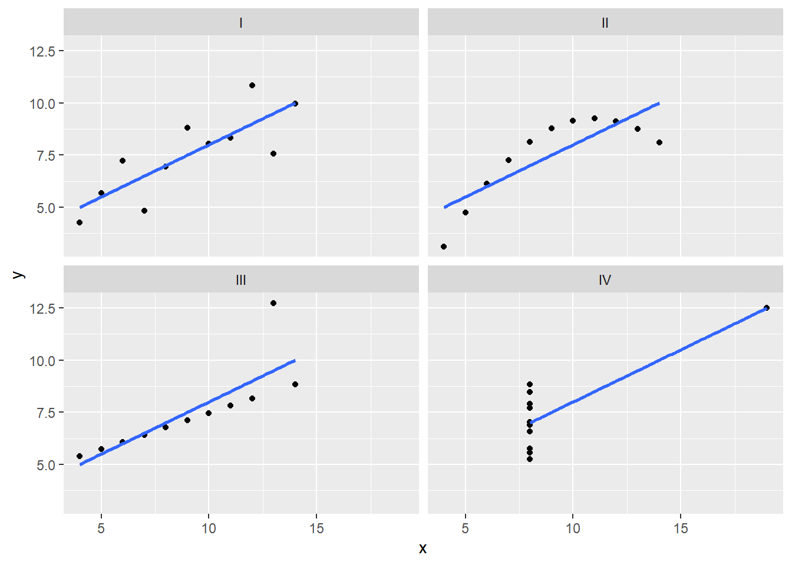
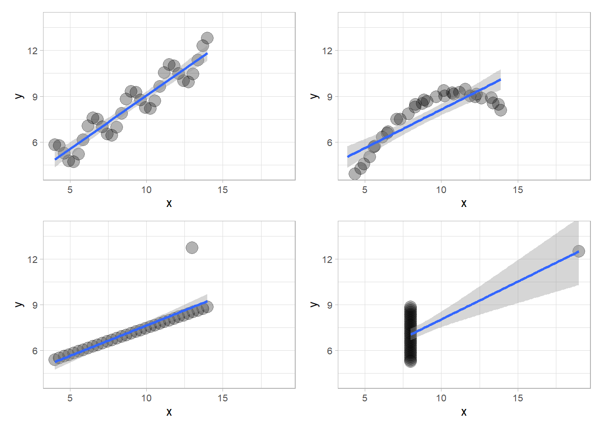

library(data.table)
library(ggplot2)
library(patchwork)- Anscombe’s Quartet comprises four datasets that share nearly identical descriptive statistics but exhibit visually distinct behaviors, emphasizing the significance of data visualization.
- This blog post delves into the calculations and visualization of Anscombe’s Quartet using R and the powerful ggplot2 library. Custom functions are also employed to generate and analyze these quartets.
- The environment setup includes the necessary libraries such as ggplot2 for data visualization.
- Understanding Anscombe’s Quartet: A brief overview of the quartet’s four datasets, each with its unique characteristics, is provided, underlining the importance of visual representation in data analysis.
- Custom R code and examples are presented to generate and visualize Anscombe’s Quartet, shedding light on the importance of data visualization in revealing patterns and relationships that statistics alone may overlook.
Exploring Anscombe’s Quartet with R, ggplot2, and Custom Functions
Anscombe’s Quartet, known as the “Anscombe’s Test,” consists of four datasets with very similar descriptive statistics but visually distinct characteristics. These quartets serve as an enlightening example of the importance of visualizing data before drawing conclusions.
In this post, we will delve into how to calculate and visualize Anscombe’s Quartet using R and the powerful ggplot2 library. We’ll also use custom functions to generate these quartets and analyze them.
Introduction
Anscombe’s Quartet was created by the statistician Francis Anscombe in 1973 to underscore the importance of data visualization before analysis. Despite having similar statistics, these datasets exhibit significantly different visual behaviors. Let’s see how R and ggplot2 help us explore them.
Setting Up the Environment
To get started, we need to load some libraries:
Understanding Anscombe’s Quartet
Anscombe’s Quartet comprises four datasets, each with 11 data points. Here’s a brief overview of the quartet:
Dataset 1: A straightforward linear relationship between X and Y.
Dataset 2: A linear relationship with an outlier.
Dataset 3: A linear relationship with one point substantially different from the others.
Dataset 4: A non-linear relationship.
(see Rpubs page)
library(datasets)
library(ggplot2)
library(dplyr)
Caricamento pacchetto: 'dplyr'I seguenti oggetti sono mascherati da 'package:data.table':
between, first, lastI seguenti oggetti sono mascherati da 'package:stats':
filter, lagI seguenti oggetti sono mascherati da 'package:base':
intersect, setdiff, setequal, unionlibrary(tidyr)
datasets::anscombe x1 x2 x3 x4 y1 y2 y3 y4
1 10 10 10 8 8.04 9.14 7.46 6.58
2 8 8 8 8 6.95 8.14 6.77 5.76
3 13 13 13 8 7.58 8.74 12.74 7.71
4 9 9 9 8 8.81 8.77 7.11 8.84
5 11 11 11 8 8.33 9.26 7.81 8.47
6 14 14 14 8 9.96 8.10 8.84 7.04
7 6 6 6 8 7.24 6.13 6.08 5.25
8 4 4 4 19 4.26 3.10 5.39 12.50
9 12 12 12 8 10.84 9.13 8.15 5.56
10 7 7 7 8 4.82 7.26 6.42 7.91
11 5 5 5 8 5.68 4.74 5.73 6.89summary(anscombe) x1 x2 x3 x4 y1
Min. : 4.0 Min. : 4.0 Min. : 4.0 Min. : 8 Min. : 4.260
1st Qu.: 6.5 1st Qu.: 6.5 1st Qu.: 6.5 1st Qu.: 8 1st Qu.: 6.315
Median : 9.0 Median : 9.0 Median : 9.0 Median : 8 Median : 7.580
Mean : 9.0 Mean : 9.0 Mean : 9.0 Mean : 9 Mean : 7.501
3rd Qu.:11.5 3rd Qu.:11.5 3rd Qu.:11.5 3rd Qu.: 8 3rd Qu.: 8.570
Max. :14.0 Max. :14.0 Max. :14.0 Max. :19 Max. :10.840
y2 y3 y4
Min. :3.100 Min. : 5.39 Min. : 5.250
1st Qu.:6.695 1st Qu.: 6.25 1st Qu.: 6.170
Median :8.140 Median : 7.11 Median : 7.040
Mean :7.501 Mean : 7.50 Mean : 7.501
3rd Qu.:8.950 3rd Qu.: 7.98 3rd Qu.: 8.190
Max. :9.260 Max. :12.74 Max. :12.500 anscombe_tidy <- anscombe %>%
mutate(observation = seq_len(n())) %>%
gather(key, value, -observation) %>%
separate(key, c("variable", "set"), 1, convert = TRUE) %>%
mutate(set = c("I", "II", "III", "IV")[set]) %>%
spread(variable, value)
head(anscombe_tidy) observation set x y
1 1 I 10 8.04
2 1 II 10 9.14
3 1 III 10 7.46
4 1 IV 8 6.58
5 2 I 8 6.95
6 2 II 8 8.14ggplot(anscombe_tidy, aes(x, y)) +
geom_point() +
facet_wrap(~ set) +
geom_smooth(method = "lm", se = FALSE)`geom_smooth()` using formula = 'y ~ x'
Visualizing the Quartet
Now, let’s integrate your custom R code and examples to generate and visualize Anscombe’s Quartet:
library(vtable)Caricamento del pacchetto richiesto: kableExtra
Caricamento pacchetto: 'kableExtra'Il seguente oggetto è mascherato da 'package:dplyr':
group_rowslibrary(kableExtra)
library(patchwork)
# Note: Function to generate Anscombe's Quartet datasets for x2 we need a trick that can be also improved but for now as a brutal approx works
plotreg <- function(df) {
formula <- y ~ x
ggplot(df, aes(x = x, y = y)) +
geom_point(aes(size = 1), alpha = 0.3) +
geom_smooth(method = "lm", formula = formula, se = TRUE) +
coord_cartesian(xlim = c(4, 19), ylim = c(4, 14)) + # Imposta i limiti di x e y
theme_light(base_size = 10) +
theme(legend.position = "none")
}
generate_noisy_points <- function(x, y, noise_level = 0.1) {
n <- length(x)
# Generate random noise for x and y separately
noise_x <- rnorm(n, mean = 0, sd = noise_level)
noise_y <- rnorm(n, mean = 0, sd = noise_level)
# Ensure that the sum of noise on x and y is approximately zero
noise_x <- noise_x - mean(noise_x)
noise_y <- noise_y - mean(noise_y)
# Add noise to the original data
x_noisy <- x + noise_x
y_noisy <- y + noise_y
return(data.frame(x = x_noisy, y = y_noisy))
}
# Function to generate approximated points with an option to add noise
generate_approximated_points <- function(n, x, y, noise_level = 0) {
# Create a new interpolation based on the original data
interpolated_values <- approx(x, y, xout = seq(min(x), max(x), length.out = n))
# Extract the interpolated points
x_interp <- interpolated_values$x
y_interp <- interpolated_values$y
# Add noise if needed
if (noise_level > 0) {
noise <- rnorm(n, mean = 0, sd = noise_level)
x_interp <- x_interp + noise
y_interp <- y_interp + noise
}
# Return the approximated points
return(data.frame(x = x_interp, y = y_interp))
}
multians <- function(npoints = 11, anscombe) {
x1 <- anscombe$x1
x2 <- anscombe$x2
x3 <- anscombe$x3
x4 <- anscombe$x4
y1 <- anscombe$y1
y2 <- anscombe$y2
y3 <- anscombe$y3
y4 <- anscombe$y4
## Generate Quartet 1 ##
x_selected <- c(x1[2], x1[4], x1[11])
y_selected <- c(y1[2], y1[4], y1[11])
# Calculate the linear regression
linear_model <- lm(y_selected ~ x_selected)
# Extract coefficients of the line
intercept <- coef(linear_model)[1]
slope <- coef(linear_model)[2]
# Create a sinusoidal curve above or below the line
x_sin <- seq(min(x1), max(x1), length.out = npoints) # x range for the sinusoid
amplitude <- 1 # Amplitude of the sinusoid
frequency <- 4 # Frequency of the sinusoid
phase <- pi / 2 # Phase of the sinusoid (for rotation)
sinusoid <- amplitude * sin(2 * pi * frequency * (x_sin - min(x1)) / (max(x1) - min(x1)) + phase)
# Generate points above or below the line
y_sin <- slope * x_sin + intercept + sinusoid
df1 <- data.frame(x = x_sin, y = y_sin)
## Generate Quartet 2 ##
n_points_approximated <- npoints
noise_level <- 0.1
# Generate approximated points
approximated_points <- generate_approximated_points(n_points_approximated, x2, y2, noise_level = 0.1)
# Add noise to the approximated points
noisy_approximated_points <- generate_noisy_points(approximated_points$x, approximated_points$y, noise_level)
# Now, you have noisy approximated points in df2
df2 <- data.frame(x = noisy_approximated_points$x, y = noisy_approximated_points$y)
## Generate Quartet 3 ##
lm_model <- lm(y3 ~ x3, subset = -c(3))
x_generated <- seq(min(x3), max(x3), length.out = npoints)
y_generated <- predict(lm_model, newdata = data.frame(x3 = x_generated))
x_outlier <- 13
y_outlier <- 12.74
x_generated <- c(x_generated, x_outlier)
y_generated <- c(y_generated, y_outlier)
df3 <- data.frame(x = x_generated, y = y_generated)
## Generate Quartet 4 ##
y4[9]
x <- c(rep(min(x4),npoints))
y <- c(seq(min(y4[-8]), max(y4[-8]), length.out = (npoints)))
x_new = c(x,x4[8])
y_new = c(y,y4[8])
df4 <- data.frame(x = x_new, y = y_new)
return(list(df1 = df1, df2 = df2, df3 = df3, df4 = df4))
}
# Generate and plot Quartet 1
t1 <- multians(33,anscombe)
p1 <- plotreg(t1$df1)
p3 <- plotreg(t1$df3)
p4 <- plotreg(t1$df4)
p2 <- plotreg(t1$df2)
(p1 | p2) / (p3 | p4)
# Example of eight summaries (replace them with your own)
summary1 <- st(t1$df1)
summary5 <- st(data.frame(anscombe$x1,anscombe$y1))
summary2 <- st(t1$df2)
summary6 <- st(data.frame(anscombe$x2,anscombe$y2))
summary3 <- st(t1$df3)
summary7 <- st(data.frame(anscombe$x3,anscombe$y3))
summary4 <- st(t1$df4)
summary8 <- st(data.frame(anscombe$x4,anscombe$y4))
summary1 | Variable | N | Mean | Std. Dev. | Min | Pctl. 25 | Pctl. 75 | Max |
|---|---|---|---|---|---|---|---|
| x | 33 | 9 | 3 | 4 | 6.5 | 12 | 14 |
| y | 33 | 8.3 | 2.2 | 4.7 | 6.5 | 10 | 13 |
summary5 | Variable | N | Mean | Std. Dev. | Min | Pctl. 25 | Pctl. 75 | Max |
|---|---|---|---|---|---|---|---|
| anscombe.x1 | 11 | 9 | 3.3 | 4 | 6.5 | 12 | 14 |
| anscombe.y1 | 11 | 7.5 | 2 | 4.3 | 6.3 | 8.6 | 11 |
summary2 | Variable | N | Mean | Std. Dev. | Min | Pctl. 25 | Pctl. 75 | Max |
|---|---|---|---|---|---|---|---|
| x | 33 | 9 | 3 | 4.1 | 6.4 | 12 | 14 |
| y | 33 | 7.6 | 1.8 | 3.1 | 6.6 | 9 | 9.4 |
summary6 | Variable | N | Mean | Std. Dev. | Min | Pctl. 25 | Pctl. 75 | Max |
|---|---|---|---|---|---|---|---|
| anscombe.x2 | 11 | 9 | 3.3 | 4 | 6.5 | 12 | 14 |
| anscombe.y2 | 11 | 7.5 | 2 | 3.1 | 6.7 | 8.9 | 9.3 |
summary3| Variable | N | Mean | Std. Dev. | Min | Pctl. 25 | Pctl. 75 | Max |
|---|---|---|---|---|---|---|---|
| x | 34 | 9.1 | 3.1 | 4 | 6.6 | 12 | 14 |
| y | 34 | 7.3 | 1.4 | 5.4 | 6.3 | 8.1 | 13 |
summary7 | Variable | N | Mean | Std. Dev. | Min | Pctl. 25 | Pctl. 75 | Max |
|---|---|---|---|---|---|---|---|
| anscombe.x3 | 11 | 9 | 3.3 | 4 | 6.5 | 12 | 14 |
| anscombe.y3 | 11 | 7.5 | 2 | 5.4 | 6.2 | 8 | 13 |
summary4 | Variable | N | Mean | Std. Dev. | Min | Pctl. 25 | Pctl. 75 | Max |
|---|---|---|---|---|---|---|---|
| x | 34 | 8.3 | 1.9 | 8 | 8 | 8 | 19 |
| y | 34 | 7.2 | 1.4 | 5.2 | 6.2 | 8 | 12 |
summary8| Variable | N | Mean | Std. Dev. | Min | Pctl. 25 | Pctl. 75 | Max |
|---|---|---|---|---|---|---|---|
| anscombe.x4 | 11 | 9 | 3.3 | 8 | 8 | 8 | 19 |
| anscombe.y4 | 11 | 7.5 | 2 | 5.2 | 6.2 | 8.2 | 12 |
Conclusion
Anscombe’s Quartet is a powerful reminder that descriptive statistics alone may not reveal the complete story of your data. Visualization is a crucial tool in data analysis, helping you uncover patterns, outliers, and unexpected relationships that numbers alone might miss.
References
Anscombe, F. J. 1973. “Graphs in Statistical Analysis.” The American Statistician 27 (1): 17–21. http://www.jstor.org/stable/2682899.
Szafir, Danielle Albers. 2018. “The Good, the Bad, and the Biased: Five Ways Visualizations Can Mislead (and How to Fix Them).” Interactions 25 (4): 26–33. https://doi.org/10.1145/3231772.